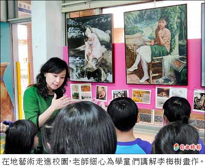

「李梅樹」進校園 在地藝術扎根
蔡明倫｜自由時報／新北都會生活∣2013年11月5日
新北市三峽區繼三、四月舉辦「梅樹月」活動後，再前進校園，將李梅樹大師的畫作與故事帶到介壽國小圖書館，在為期兩個月的活動期間，讓學童了解這位出身當地的藝術大師，也是二十世紀台灣知名的藝術家。
介壽國小圖書館展兩個月
李梅樹是著名畫家、美術教授，日治時期當過三峽街代理街長（鎮長）、三峽農會理事長及台北縣議員，主導重修三峽祖師廟，建築與設計每處細節都精心設計雕琢，祖師廟因而被譽為「藝術殿堂」。
昨天活動第一天，一下課介壽國小圖書館就擠滿人，有老師帶著整班學生來上課，透過電子繪本中李梅樹與孫子的對談，體會大師進取精神。傳記繪本中的李梅樹還請來李梅樹的小兒子李景文配音；鄉土教學老師李政芬說，李梅樹的寫實風格在當時並不風行，仍堅持自己的路，精神值得孩子學習。
活動最大推手胥春幸笑說，原本只是單純想辦李梅樹畫展，沒想到一頭栽進大師的精彩人生，透過畫展、學習單及互動遊戲等方式，剖析這位集教育、政治及藝術的大師，讓孩子知道，李梅樹其實並不是「一棵樹」。
李梅樹紀念館館長、也是李梅樹次子李景光表示，之前梅樹月像藝術嘉年華，遊客可能只是走馬看花，如今深入基礎教育非常有意義。